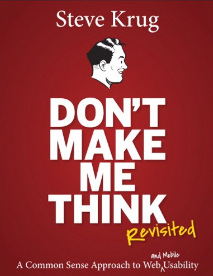

Andrew Nolan's Blog
Andrew's Blog


Andrew Nolan
2023-03-03
Designing, building, and maintaining a great site is never easy. Sadly, when people use your app or website, no matter how different it may be, someone will compare it with something else. Even if you made an app for games, or for books, or an online learning platform, as soon as you add a "playlist" feature, someone out there will compare it to YouTube.
I don't mean to say that's always a bad thing, but for better or worse, people have a preconceived notion of how things should work. Your job as the designer or developer is to work around these assumptions, reduce cognitive load, and make your app easy to use.
As UX Expert (UXpert) Steve Krug says if you want to make a good app, "don't make me think." That's the titular goal of his aptly named book Don't Make me Think. I recently began reading this book and I thought this would be a great opportunity to share its insights with the world and also help me write down and solidify the concepts. I am sure a lot of people reading this work on personal coding projects, websites, or other things where they don't have access to a dedicated UX professional. Going through this book will hopefully give us all the basic skills to make great user experiences in those projects. I will be reading 1-2 chapters (about 20 pages) each week and writing about them in this blog. If you are interested, please join in for the ride!
Krug's First Law of Usability is "don't make me think." I've been writing that a lot but what does it really mean. It means we want to reduce the cognitive load and "question marks" in a user's head as they use your app (or tool, or site, or whatever). Usability means an average or below average person can make it work without question.
Let's take some basic components of an app to think about what these user thoughts could look like.
| Element | Good thoughts | Bad thoughts |
|---|---|---|
| Link | This is the link I need | Where does this link take me? |
| Button | This button will get me what I want | What will this button do? |
| Login Form | Here is the form to log in | How the heck do I log in?! |
These are super simple but highlight the key idea we are talking about. A bad thought in the context of someone seeing your app is if they question it. The workflows are ideally self-evident and can be followed by anyone. When creating an app your goal is to get rid of the questions marks in your users' heads. There are a lot of ways to do this, some initial ideas from the book are:
A lot of this might be common knowledge to you already, it is only the start of the book. But as we go through, we will cover many more topics and ways to analyze and improve our designs (I hope, I don't actually know, I haven't read it yet!). But this quick list is a good place to start.
A good exercise I am going to try, and I encourage you all to try too, is to pay attention to good and bad design in your everyday life. If a website makes you mad make a note of it. If a workflow is really easy, take note too. Collecting positive and negative experiences you have will help you design better user experiences for your users later. If you have any interesting designs you run into, let me know! I'd love to see them too and maybe highlight them in a future week's post.
Enjoyed this article? Subscribe to the RSS Feed!